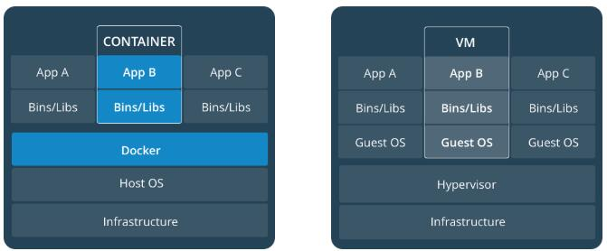
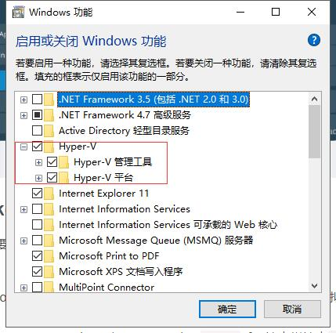
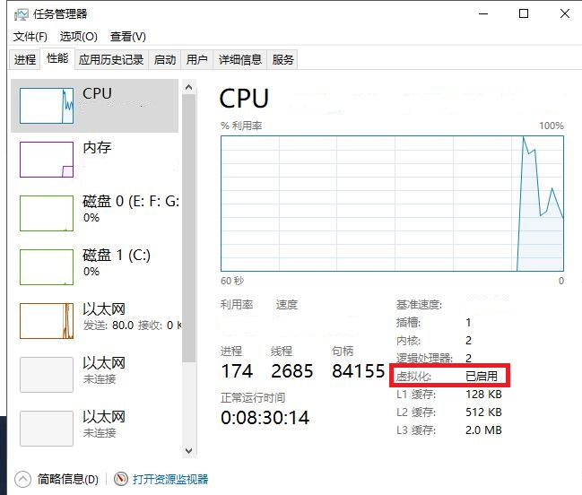
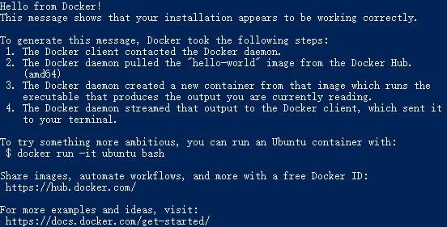

<!DOCTYPE html>
<html lang="zh" class="loading">
<head><meta name="generator" content="Hexo 3.9.0">
    <meta charset="UTF-8">
    <meta http-equiv="X-UA-Compatible" content="IE=edge,chrome=1">
    <meta name="viewport" content="width=device-width, minimum-scale=1.0, maximum-scale=1.0, user-scalable=no">
    <title>Docker官方起步指南学习笔记①——概念与安装 - WhiteRobe&#39;s Blog</title>
    <meta name="apple-mobile-web-app-capable" content="yes">
    <meta name="apple-mobile-web-app-status-bar-style" content="black-translucent">
    <meta name="google" content="notranslate">
    <link href="https://cdnjs.cloudflare.com/ajax/libs/KaTeX/0.11.0/katex.min.css" rel="stylesheet">
    <meta name="keywords" content="WhiteRobe, Blog,"> 
    <meta name="description" content="着眼实例，从最简单的开始；你觉得再简单不过的东西，或许在别人眼里那就是悬崖。而我，愿作那攀岩绳。,本学习笔记 Base on ——

&amp;gt;Get Started With Docker&amp;lt;


 Docker概念
Docker是一个供开发人员和系统管理员进行开发、部署和运行应用程序的平台,"> 
    <meta name="author" content="WhiteRobe"> 
    <link rel="alternative" href="atom.xml" title="WhiteRobe&#39;s Blog" type="application/atom+xml"> 
    <link rel="icon" href="/img/favicon.png"> 
    <link rel="stylesheet" href="//cdn.jsdelivr.net/npm/gitalk@1/dist/gitalk.css">
    <link rel="stylesheet" href="/css/animate.css">
    <link rel="stylesheet" href="/css/fira_code.css">
    <link rel="stylesheet" href="/css/diaspora.css">
    <script async src="https://busuanzi.ibruce.info/busuanzi/2.3/busuanzi.pure.mini.js"></script>
    
        <!--站内搜索API-->
        <script src="https://cdn.jsdelivr.net/algoliasearch/3/algoliasearch.min.js"></script>
        <link rel="stylesheet" href="https://cdn.jsdelivr.net/npm/instantsearch.css@7.3.1/themes/algolia-min.css" integrity="sha256-HB49n/BZjuqiCtQQf49OdZn63XuKFaxcIHWf0HNKte8=" crossorigin="anonymous">
        <script src="https://cdn.jsdelivr.net/npm/instantsearch.js@3.4.0/dist/instantsearch.production.min.js" integrity="sha256-pM0n88cBFRHpSn0N26ETsQdwpA7WAXJDvkHeCLh3ujI=" crossorigin="anonymous"></script>
    
    <!-- <script async src="//pagead2.googlesyndication.com/pagead/js/adsbygoogle.js"></script>
    <script>
          // No more ads!
         (adsbygoogle = window.adsbygoogle || []).push({
              google_ad_client: "ca-pub-8691406134231910",
              enable_page_level_ads: true
         });
    </script>
    <script async custom-element="amp-auto-ads"
        src="https://cdn.ampproject.org/v0/amp-auto-ads-0.1.js">
    </script> -->
</head>
</html>
<body class="loading">
    <span id="config-title" style="display:none">WhiteRobe&#39;s Blog</span>
    <div id="loader"></div>
    <div id="single">
    <div id="top" style="display: block; display: block;position: fixed; top: 0px;">
    <div class="bar" style="width: 0;"></div>
    <a class="icon-home image-icon" href="javascript:;" data-url="https://blog.whiterobe.top"></a>
    <div title="播放/暂停" class="icon-play"></div>
    <h3 class="subtitle">Docker官方起步指南学习笔记①——概念与安装</h3>
    <div class="social">
        <!--<div class="like-icon">-->
            <!--<a href="javascript:;" class="likeThis active"><span class="icon-like"></span><span class="count">76</span></a>-->
        <!--</div>-->
        <div style="font-size: 1rem;margin-right: -10px">
          分享此文：
        </div>
        <div>
          <div class="share">
              <a title="获取文章地址二维码" class="icon-scan" href="javascript:;"></a>
          </div>
          <div id="qr"></div>
        </div>
    </div>
    <div class="scrollbar"></div>
</div>

    <div class="section" style="margin-top: 50px">
        <div class="article">
    <div class='main'>
        <h1 class="title">Docker官方起步指南学习笔记①——概念与安装</h1>
        <div class="stuff">
            <span>九月 09, 2019</span>
            <span id="busuanzi_container_page_pv" class="busuanzi_page" style="display:none">本文总阅读量<div id="busuanzi_value_page_pv" style="display: inline;">1</div>次</span>
            
  <ul class="post-tags-list"><li class="post-tags-list-item"><a class="post-tags-list-link" href="/tags/Docker/">Docker</a></li><li class="post-tags-list-item"><a class="post-tags-list-link" href="/tags/版本控制/">版本控制</a></li></ul>


        </div>
        <div class="low-resolution-warn-info">当前设备屏幕尺寸过小，推荐使用PC模式浏览。</div>
        <div class="content markdown">
            <p>本学习笔记 Base on ——</p>
<blockquote>
<p>&gt;<a href="https://docs.docker.com/get-started/" target="_blank" rel="noopener">Get Started With Docker</a>&lt;</p>
</blockquote>
<hr>
<h2 id="docker概念"><a class="markdownIt-Anchor" href="#docker概念"></a> Docker概念</h2>
<p>Docker是一个供开发人员和系统管理员进行<strong>开发、部署和运行</strong>应用程序的平台。使用Linux容器部署应用程序称为<em>容器化</em>。容器化并不是新概念，但是将它们用于简化部署应用程序却是前所未有的创新。</p>
<h2 id="image-和-container"><a class="markdownIt-Anchor" href="#image-和-container"></a> Image 和 Container</h2>
<p>运行一个**映像(Image)<strong>以对</strong>容器(Container)**进行操作。</p>
<ul>
<li><strong>映像</strong> 是一个可执行包，它包含运行应用程序所需的所有内容——代码、运行时环境、库、环境变量和配置文件等。</li>
<li><strong>容器</strong> 是映像的运行时实例。您可以就像在Linux中一样使用<code>docker ps</code>命令查看正在运行的容器列表。</li>
</ul>
<h2 id="container-和-virtual-machines-的区别"><a class="markdownIt-Anchor" href="#container-和-virtual-machines-的区别"></a> Container 和 virtual machines 的区别</h2>
<blockquote>
<p>容器在一个Linux本地主机上运行，与其它容器共享主机的内核，不占用额外的内存，使得其与虚拟机(虚拟机注册了一个Guset OS)相比更为轻量化：</p>
</blockquote>
<p align="center">
  
</p>
<h2 id="docker-的安装及国内镜像源"><a class="markdownIt-Anchor" href="#docker-的安装及国内镜像源"></a> Docker 的安装及国内镜像源</h2>
<ol>
<li>首先需要注册<em>Docker Hub ID</em>，然后<a href="https://www.docker.com/get-started" target="_blank" rel="noopener">&gt;下载&lt;</a>相应平台的安装包即可。</li>
<li>以Windows平台为例，Docker需要用到微软Hyper-V技术及Intel的虚拟化技术。</li>
</ol>
<ul>
<li>首先要打开Hyper-v服务。对于Win10，直接<code>Win+Q</code>呼出<em>搜索栏</em>  搜索<code>启动或关闭Windows功能</code>，确保Hyper-V选项已被勾选。</li>
</ul>
<p align="center">
  
</p>
<ul>
<li>重启电脑，按<code>F2</code>等主板电源配置按键进入<strong>BIOS</strong>，找到CPU虚拟化技术，将其打开；若其已被打开，则在进程管理器可以看到以下内容：</li>
</ul>
<p align="center">
  
</p>
<ol start="3">
<li>配置国内镜像源：打开<code>Docker-Setting-Deamon</code>，可以选择配置阿里云镜像或是中科大镜像源：<code>https://docker.mirrors.ustc.edu.cn</code></li>
<li>测试安装和镜像源结果：在CMD或PowerShell键入<code>docker --version</code>和<code>docker info</code>可以查看当前Docker的版本以及运行情况；尝试运行<code>docker run hello-world</code>将会自动拉取一个名为<code>hello-world</code>的镜像并自动生成运行容器，该镜像将会自动执行一个名为&quot;hello&quot;的脚本，打印以下结果：</li>
</ol>
<p align="center">
  
</p>
<ul>
<li>若要<strong>移除</strong>刚刚拉取的<code>hello-world</code>镜像，首先，要先移除所有正在运行的容器：<code>docker rm $(docker ps -a -q)</code>；然后，利用<code>docker images</code>或<code>docker image ls</code>指令列出所有镜像(推荐后者)；最后，使用<code>docker rmi Image的ID或Repostory名称</code>移除指定镜像，如<code>docker rmi hello-world</code>。</li>
<li>查看所有容器，可以使用<code>docker ps</code>或<code>docker container ls -all</code>指令</li>
</ul>

            <!--[if lt IE 9]><script>document.createElement('audio');</script><![endif]-->
            <audio id="audio" loop="1" preload="auto" controls="controls" data-autoplay="true">
                <source type="audio/mpeg" src="">
            </audio>
            
                <ul id="audio-list" style="display:none">
                    
                        
                            <li title='0' data-url='https://gitee.com/shenpibaipao/wr-diaspora/raw/master/source/audio/jinyecheng.mp3'></li>
                        
                    
                        
                            <li title='1' data-url='https://gitee.com/shenpibaipao/wr-diaspora/raw/master/source/audio/juhuatai.mp3'></li>
                        
                    
                        
                            <li title='2' data-url='https://gitee.com/shenpibaipao/wr-diaspora/raw/master/source/audio/MapleStory.mp3'></li>
                        
                    
                </ul>
            
        </div>
        
    <div id='gitalk-container' class="comment link"
        data-ae='true'
        data-ci='5b763306cd7b9d9c3981'
        data-cs='c31e9bf78a807055f5439caea747b09d1d9c8f18'
        data-r='image-blog.io'
        data-o='WhiteRobe'
        data-a='WhiteRobe'
        data-d='false'
    >查看评论</div>


    </div>
    
        <div class='side'>
            <ol class="toc"><li class="toc-item toc-level-2"><a class="toc-link" href="#docker概念"><span class="toc-number">1.</span> <span class="toc-text"> Docker概念</span></a></li><li class="toc-item toc-level-2"><a class="toc-link" href="#image-和-container"><span class="toc-number">2.</span> <span class="toc-text"> Image 和 Container</span></a></li><li class="toc-item toc-level-2"><a class="toc-link" href="#container-和-virtual-machines-的区别"><span class="toc-number">3.</span> <span class="toc-text"> Container 和 virtual machines 的区别</span></a></li><li class="toc-item toc-level-2"><a class="toc-link" href="#docker-的安装及国内镜像源"><span class="toc-number">4.</span> <span class="toc-text"> Docker 的安装及国内镜像源</span></a></li></ol>
        </div>
    
</div>


    </div>
    <!--下悬浮返回键-->
    <div style="background: white; height:30px; width: 30px; border-radius: 16px; position: fixed; bottom: 1.5rem; right: 1.5rem; border: 2px solid rgba(0, 0, 0, 0.5)">
      <a class="icon-left image-icon" style="left:4px; top:4px" href="javascript:history.back()"></a>
    </div>
</div>
</body>
<script src="//cdn.jsdelivr.net/npm/gitalk@1/dist/gitalk.min.js"></script>
<script src="//lib.baomitu.com/jquery/1.8.3/jquery.min.js"></script>
<script src="/js/plugin.js"></script>
<script src="/js/diaspora.js"></script>
<link rel="stylesheet" href="/photoswipe/photoswipe.css">
<link rel="stylesheet" href="/photoswipe/default-skin/default-skin.css">
<script src="/photoswipe/photoswipe.min.js"></script>
<script src="/photoswipe/photoswipe-ui-default.min.js"></script>

<!-- Root element of PhotoSwipe. Must have class pswp. -->
<div class="pswp" tabindex="-1" role="dialog" aria-hidden="true">
    <!-- Background of PhotoSwipe. 
         It's a separate element as animating opacity is faster than rgba(). -->
    <div class="pswp__bg"></div>
    <!-- Slides wrapper with overflow:hidden. -->
    <div class="pswp__scroll-wrap">
        <!-- Container that holds slides. 
            PhotoSwipe keeps only 3 of them in the DOM to save memory.
            Don't modify these 3 pswp__item elements, data is added later on. -->
        <div class="pswp__container">
            <div class="pswp__item"></div>
            <div class="pswp__item"></div>
            <div class="pswp__item"></div>
        </div>
        <!-- Default (PhotoSwipeUI_Default) interface on top of sliding area. Can be changed. -->
        <div class="pswp__ui pswp__ui--hidden">
            <div class="pswp__top-bar">
                <!--  Controls are self-explanatory. Order can be changed. -->
                <div class="pswp__counter"></div>
                <button class="pswp__button pswp__button--close" title="Close (Esc)"></button>
                <button class="pswp__button pswp__button--share" title="Share"></button>
                <button class="pswp__button pswp__button--fs" title="Toggle fullscreen"></button>
                <button class="pswp__button pswp__button--zoom" title="Zoom in/out"></button>
                <!-- Preloader demo http://codepen.io/dimsemenov/pen/yyBWoR -->
                <!-- element will get class pswp__preloader--active when preloader is running -->
                <div class="pswp__preloader">
                    <div class="pswp__preloader__icn">
                      <div class="pswp__preloader__cut">
                        <div class="pswp__preloader__donut"></div>
                      </div>
                    </div>
                </div>
            </div>
            <div class="pswp__share-modal pswp__share-modal--hidden pswp__single-tap">
                <div class="pswp__share-tooltip"></div> 
            </div>
            <button class="pswp__button pswp__button--arrow--left" title="Previous (arrow left)">
            </button>
            <button class="pswp__button pswp__button--arrow--right" title="Next (arrow right)">
            </button>
            <div class="pswp__caption">
                <div class="pswp__caption__center"></div>
            </div>
        </div>
    </div>
</div>


</html>
